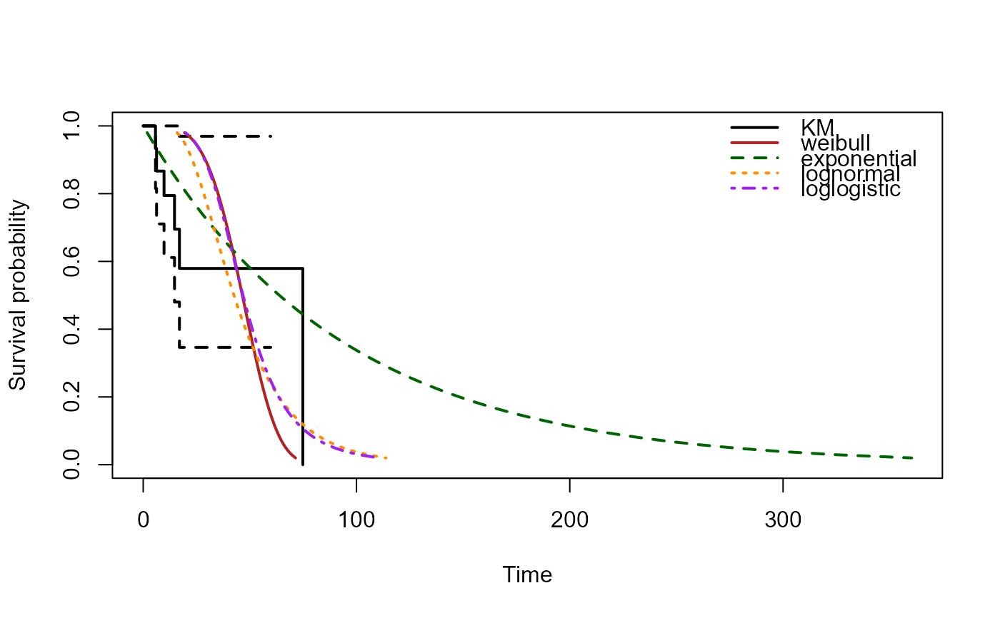

R/survival_parametric.R
survival_parametric.Rdsurvival_parametric() scores each sample of a
SummarizedExperiment with the signature's joint Cox coefficients and
fits a set of parametric accelerated-failure-time models of the event time
on that score, using survreg. It returns an AIC
comparison across the fitted distributions, the fitted survival curves
(evaluated at the mean risk score) for overlay on the Kaplan-Meier
estimate, and a plot() method that draws the KM curve together with
the parametric curves.
survival_parametric(
sig,
se,
dists = c("weibull", "exponential", "lognormal", "loglogistic")
)An object of class "rnaSentry_signature" as returned by
build_signature.
A SummarizedExperiment containing the signature genes in
its rows and the survival metadata columns recorded in sig
(sig$time_col and sig$event_col). Expression is taken from
the same analysis assay used at signature-build time (see
build_signature).
Character vector of parametric distributions to fit, any
subset of "weibull", "exponential", "lognormal" and
"loglogistic". Defaults to all four.
An object of class "rnaSentry_parametric" (a list) with
elements:
The signature genes scored.
Per-sample risk score (linear predictor).
Named list of survreg fits, one per distribution.
Data.frame comparing distributions on loglik,
npar, AIC, delta_AIC, weight and
best, ordered by increasing AIC.
Name of the lowest-AIC distribution.
The survfit object of the whole cohort.
Named list of fitted survival curves (data.frame with
time and survival), evaluated at the mean risk score.
Whether the input signature was locked.
Provenance timestamp.
Data.frame of issues raised (e.g. a model that failed to
fit, or near-tied AIC values), with columns check,
severity, detail and stage.
The stage is read-only: it works on both locked and unlocked signatures and records the signature's lock state in its output.
library(SummarizedExperiment)
set.seed(9)
counts <- matrix(rpois(450, lambda = 500), nrow = 30, ncol = 15,
dimnames = list(paste0("gene", 1:30), paste0("S", 1:15)))
sig_expr <- colMeans(counts[1:4, , drop = FALSE])
risk <- scale(sig_expr)[, 1] * 0.4
event_time <- rexp(15, rate = 0.03 * exp(0.8 * risk))
censor_time <- rexp(15, rate = 0.02)
time <- pmin(event_time, censor_time)
event <- as.integer(event_time < censor_time)
coldata <- S4Vectors::DataFrame(time = time, event = event,
row.names = colnames(counts))
se <- SummarizedExperiment(assays = list(counts = counts), colData = coldata)
sig <- build_signature(se, "time", "event", top_n = 4, repeats = 1,
folds = 2, seed = 1)
#> Warning: Only 6 event(s) for a 3-gene signature (2.0 events per parameter), below 'min_events_per_parameter' = 5. Cross-validated concordance and hazard ratios are unstable at this event count; consider fewer genes or a larger cohort.
sp <- survival_parametric(sig, se)
sp
#> rnaSentry parametric models: 3-gene signature, 15 samples.
#> AIC comparison:
#> weibull AIC 44.18 delta 0.00 weight 0.733 *
#> loglogistic AIC 46.96 delta 2.79 weight 0.182
#> lognormal AIC 48.70 delta 4.53 weight 0.076
#> exponential AIC 53.06 delta 8.89 weight 0.009
#> Best model: weibull.
#> Signature not locked.
plot(sp)
